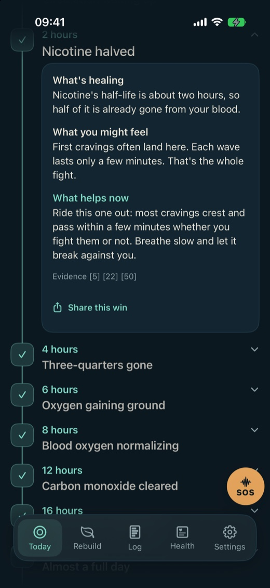
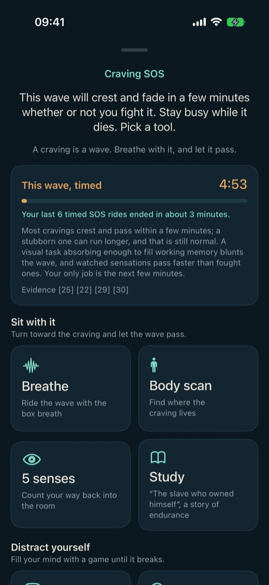
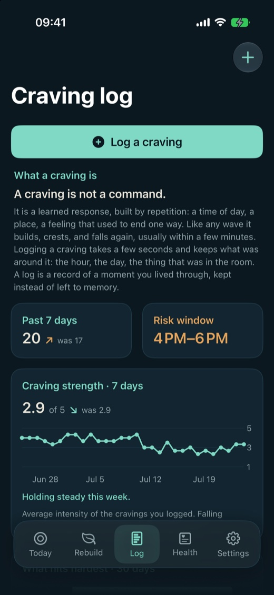

See it coming.
Cravings are not random, and yours are not a mystery. They arrive at hours, and hours can be counted.
Log a craving in two taps. Once enough of them have landed on enough separate days, QuitForecast names the two hours yours gather in, and arms about three hours before they open. Not a mood, not a score: a count you could have made yourself, out of your own log.

The dial sits in the corner of the counter. One word, all day.

Tap it and the count that earned the warning is right there, along with the trigger that usually rides with it.
Real screens, from a real build, in a log that happens to peak on Monday afternoons. Yours will name different hours, or none at all.
It stays quiet when it does not know
A window has to clear a statistical bar before the app will speak, measured across your last eight weeks. In our own backtest, across twelve simulated logs, 97 percent of the warnings it gave were for hours a craving really did arrive in, and for the person whose cravings had no pattern to find it stayed silent for good. An app that admits when it does not know is worth more than one that guesses.
The dial predicts nothing
A ring of your day, midnight at the top, the amber arc your window, the cream dot now. Under it, one word: Outside it, Window soon, In window, Held. It says where you are standing in your own pattern. There is no score in it, no colour scale, and no red.
A counter that resets to zero has told you the last forty days did not happen. They happened.
A slip restarts the clock and nothing else. Your timeline keeps every run you have made, the savings tin never resets, and the lessons stay in the log where the next window can use them. Nobody is scored and nobody is scolded. There is no streak to lose.
Only you, uninterrupted.
There is no improved you at the end of this.
In the app, at the top of the Health tab.
Nothing is being added. Something is being removed. Nicotine did not add a self, and quitting does not build one. It only sets down a weight you had stopped noticing you carried, and what remains was always what you were.
The flatness of week one is not a personality. It is a withdrawal state, and it has a duration. QuitForecast names that duration hour by hour, from twenty minutes to fifteen years, with a separate timeline for smoking, vaping, alcohol, cannabis and caffeine.
Every hour of it, and the evidence for each one
Open any milestone and it holds three things: what is healing, what you might feel today, and what actually helps right now. At two hours it says nicotine’s half-life is about two hours, so half of it is already gone, and the studies that claim rests on are printed right under it. All 54 sources are listed inside the app with working links, and a catalogue move with no study behind it says so on its own page.
Connect Apple Health and five measures chart themselves against your own average from the fourteen days before you quit: resting heart rate, heart rate variability, cardio fitness, respiratory rate, blood oxygen. That data is read on your device, shown to you, and transmitted nowhere.

A craving is a wave.
It crests and fades in a few minutes whether or not you fight it. The whole job is to still be there afterwards.
SOS times the wave while you ride it, and after a few rides it can tell you how long yours actually last, which is almost always shorter than they feel. There is a breath pacer, a body scan, a grounding exercise, a passage to read, and two games for when thinking is not on the table.
Every one of these is free, permanently, along with the crisis lines. Nobody should have to buy a subscription in the middle of the worst ten minutes of their week.

Know it first.
The log is not homework. It is the only place your own evidence can come from.
Two taps records a craving, from the phone or from your wrist. What comes back are facts in your own numbers, each one a thing you could have counted by hand:
- Boredom and Stress often fire together, 32 times so far. Plan for the pair, not just each one.
- Your cravings are holding a steady rhythm, about every 8 hrs.
- Your last 6 timed SOS rides ended in about 3 minutes.
- Your log holds 164 cravings since you quit, and no slip at all.
Four sentences off one real log, copied from the screens beside them. Each appears only once the log holds enough to support it, and goes quiet again if it stops being true.

Four reasons to believe the sentence.
-
It is your data, not an average
The window comes out of your log and nobody else’s. No population average is ever borrowed to fill a gap.
-
It stays quiet when it does not know
Below the bar, it says nothing. Most apps guess and hope, because silence looks like a broken feature.
-
Every claim names its source
The physiology is cited on the screen that makes the claim, and the catalogue admits which moves have no study behind them.
-
Nothing leaves your phone
No accounts, no ads, no analytics, no third-party SDKs. The parts that can leave are three, and each is a thing you choose.
What is in it.
The weeks between cravings are the ones that decide it, and they are the ones nothing else helps with.
71 curated moves for those weeks, across reward, connection, meaning, competence and spirit. Every one states two plain facts before you commit to it: how long it takes, and how exposed it feels. Quiet means nobody else is involved. Real nerve means it costs something socially, or it puts you somewhere you would normally avoid. Nothing is colour-coded, because Real nerve is an invitation and a red badge would make it a warning.

Five substances
Smoking, vaping, alcohol, cannabis, caffeine. One forecast each, written separately, and you can run more than one at a time.
Two ways to keep going
Challenges you set yourself, and a savings tin that counts what you have not spent. A slip restarts the clock and neither of them resets.
54 sources
Numbered on the claim they support, listed in full inside the app, every link working.
SOS, free forever
A breath pacer, a body scan, a grounding exercise, a study passage, and two games for the minutes a craving actually lasts. Crisis lines are one tap away and never behind a price.
Wrist, Home Screen, Lock Screen
A Watch app that logs a craving in one tap, widgets in five sizes, and a Live Activity that counts the current run.
Yours to take
Export everything to a spreadsheet from Settings, whenever you like. Delete everything from the same screen, including the backup and anything you posted.
If you want it, it is there.
Four packs sit in Settings, off by default: Stoic wisdom, Christian scripture, Islamic scripture, Jewish scripture. Nothing appears unless you turn one on. Each passage carries a plain reading of what it is broadly taken to mean, offered as a reflection and never as an instruction. They are free, permanently, and the app is exactly as useful with all four switched off.
Nothing leaves.
Your habits and quit dates, your craving log, your slips, your savings, your settings and anything read from Apple Health live on your phone. There are no accounts and no passwords, because there is nothing to sign in to.
Three things can leave, and each is a thing you choose: an iCloud backup, into your own private database that we cannot read; a post to the community board, under an anonymous identifier that is never your name; and a feedback message, if you write one. That is the whole list.
This page is part of the same promise. It loads no fonts, no scripts and no trackers from anywhere, and it sets no cookies. Read the privacy policy, which is short and in plain words.
What it costs.
Free, no matter what
- Your clean-time counter and milestone timeline
- SOS craving tools and crisis lines
- Faith and philosophy packs
Premium keeps
- The full hour-by-hour forecast
- Every recovery curve and your Health proof
- The full Rebuild catalogue
$39.99 a year
$9.99 a month
$99.99 once, for good
Every safety surface is in the free half, deliberately. Nobody should have to buy a subscription to find out that alcohol withdrawal can be dangerous.
Support.
Questions, bugs, or anything the app got wrong about you: write to info@quitforecast.com and a person will answer.
If you are in crisis, please do not wait on an email. In the US, call or text 988 for the Suicide and Crisis Lifeline, or 1-800-662-4357 for the SAMHSA National Helpline, which is free, confidential and open every day. Alcohol withdrawal in particular can be dangerous: seizures, confusion or hallucinations after stopping are a medical emergency, so call 911.
QuitForecast is not a medical device and does not diagnose or treat anything. It holds no advice your own doctor should not overrule.